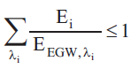

(1) Die Expositionsgrenzwerte für Expositionen von Beschäftigten an Arbeitsplätzen gegenüber Laserstrahlung sind in Anhang 4 Abschnitt A4.1 dieser TROS Laserstrahlung aufgeführt.
(2) Die Expositionsgrenzwerte werden in Abhängigkeit von der Wellenlänge, der Expositionsdauer und teilweise der Winkelausdehnung der Quelle angegeben. Die Angabe erfolgt in W • m-2 (Bestrahlungsstärke) oder in J • m-2 (Bestrahlung).
Hinweis:
Hilfen für die Berechnung von Expositionen durch Laserstrahlung findet man auch in der Reihe DIN EN 60825 mit ihren diversen Teilen. Die Messungen können in Anlehnung an die einschlägigen Normen durchgeführt werden. Spezielle Normen zur Messung von Expositionen durch Laserstrahlung liegen zurzeit noch nicht vor.
(1) Die OStrV umfasst Bewertungen je nach Arbeitsplatzanalyse mit Expositionsdauern bis zu 30 000 s pro Tag. Im Folgenden werden zur Orientierung einige wichtige Zeiten genannt, die für bestimmte Expositionsbedingungen typisch sind. Diese Expositionsdauern werden zum Teil auch bei der Klassifizierung vom Hersteller verwendet.
(2) Als typische relevante Expositionsdauern kommen 30 000 s (entspricht einem achtstündigen Arbeitstag), 100 s (typisch für Laserstrahlung mit Wellenlängen größer als 400 nm bei unterstelltem nichtbeabsichtigtem zufälligem Blick), 10 s oder 5 s (typisch für die Auswahl von Laser-Schutzbrillen und Laser-Schutz-Filtern je nach Ausgabedatum der Norm, nach der der Filter geprüft wurde), 2 s (typisch für den bewussten Blick eines unterwiesenen Beschäftigten in einen Laser der Klasse 2 beim Justieren eines feststehenden Lasers) und die Zeitdauer von 0,25 s für den kurzzeitigen, zufälligen Blick (z. B. in den sichtbaren Strahl eines handgehaltenen oder -geführten Laserpointers) zur Anwendung (siehe Tabelle 2).
Tab. 2 Typische Expositionsdauer für verschiedene Anwendungsfälle
| Expositionsdauer | Anwendungen |
| 0,25 s | typisch für den kurzzeitigen, zufälligen Blick in den sichtbaren Laserstrahl eines handgehaltenen oder -geführten Laserpointers oder eines anderen Lasers |
| 2 s | typisch für den bewussten Blick eines unterwiesenen Beschäftigten in den Laserstrahl eines Klasse-2-Lasers beim Justieren (feststehender Laser) |
| 5 s | typisch für die Auswahl von Laser-Schutzbrillen und Filtern je nach Ausgabedatum der Norm, nach der der Filter geprüft wurde (seit 2010) |
| 10 s | typisch für die Auswahl von Laser-Schutzbrillen und Filtern je nach Ausgabedatum der Norm, nach der der Filter geprüft wurde (bis 2010) |
| 100 s | typisch für Laserstrahlung mit Wellenlängen größer als 400 nm bei unterstelltem nichtbeabsichtigtem zufälligen Blick |
| 30 000 s | typisch für Laserstrahlung mit unterstelltem beabsichtigtem Blick in Richtung Laserstrahlungsquelle über längere Zeiträume, d. h. länger als 100 s |
(1) Bei Expositionen, die Laserstrahlung mit unterschiedlichen Wellenlängen beinhalten, muss zunächst geprüft werden, ob die zulässigen Expositionsgrenzwerte für die einzelnen Wellenlängen überschritten sind. Daneben ist aber für verschiedene Wellenlängenbereiche eine Additivität der Wirkung der Strahlung zu berücksichtigen. Beispielsweise kann eine Bestrahlung im UV-A-Wellenlängenbereich ebenso zur Ausbildung eines Grauen Stars beitragen, wie die Einwirkung von IR-A-Strahlung. Einen Überblick bezüglich der Additivität gibt Tabelle 3.
Tab. 3 Additive Wirkung der Strahlungseinwirkung verschiedener Wellenlängenbereiche für Auge und Haut
| Wellenlängenbereich | 100 nm bis 315 nm |
315 nm bis 400 nm |
400 nm bis 1 400 nm |
1 400 nm bis 106 nm |
| 100 nm bis 315 nm | Auge/Haut | |||
| 315 nm bis 400 nm | Auge/Haut | Haut | Auge/Haut | |
| 400 nm bis 1 400 nm | Haut | Auge/Haut | Haut | |
| 1 400 nm bis 106 nm | Auge/Haut | Haut | Auge/Haut |
(2) Liegt eine additive Wirkung von i verschiedenen Wellenlängen λi vor, so muss die Summe der Quotienten aus der Bestrahlungsstärke Ei und der jeweiligen Expositionsgrenzwerte EEGW, λi für alle Werte von i gebildet werden. Der Grenzwert ist eingehalten, wenn diese Summe kleiner als 1 ist:
 |
Gl. 4.1 |
(3) Entsprechendes gilt für Hi, falls der Expositionsgrenzwert als Bestrahlung angegeben wird.
(4) Liegt keine additive Wirkung vor, so muss jeder einzelne Expositionsgrenzwert eingehalten werden.
Beim Betrachten nahezu paralleler Laserstrahlung (direkter Blick in den Laserstrahl) kann auf der Netzhaut ein minimaler Fleck von ca. 25 µm Durchmesser entstehen. Auf diesen ungünstigsten Fall beziehen sich die Expositionsgrenzwerte.
Im Fall des Blicks in eine ausgedehnte Quelle kann der Expositionsgrenzwert um einen Korrekturfaktor CE angehoben werden. Dieser berücksichtigt die Vergrößerung des Abbilds auf der Netzhaut. Die Größe des Laserstrahlflecks auf der Netzhaut wird durch die Winkelausdehnung α gegeben, unter dem die Quelle erscheint (Anhang 2 Abschnitt A2.3 dieser TROS Laserstrahlung). Der Korrekturfaktor CE ist Tabelle A4.6 zu entnehmen.
Hinweis:
Die Anwendung des Korrekturfaktors wird in den Abschnitten 5.4 und 5.7 dieser TROS Laserstrahlung mit Beispielrechnungen erläutert.